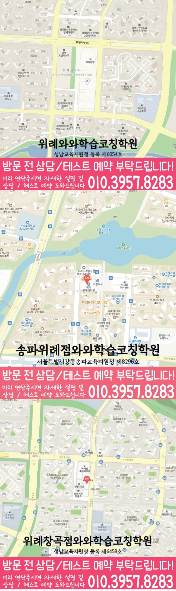

중2 영어 수업 가능 여부
확인된 센터 정보상 중2 수업 가능 학년에 포함됩니다.
GRADE 8 ENGLISH LOCAL GUIDE
위례신도시 중2영어학원 선택 전 문장 구조·독해 근거 진단, 학교 내신 자료, 오답 재학습, 상담 체크리스트와 센터 정보를 확인해 보세요.
30초 핵심 안내
본문과 문법의 난도가 높아지고 서술형 설명의 차이가 커지는 시기에는 공부 시간을 늘리기 전에 막힌 지점을 구분해야 합니다. 위례신도시 중2 학생의 주어·동사·수식 관계를 표시한 문장을 보고 문장 구조부터 보완하는 것이 첫 단계입니다. 확인된 센터 정보상 중2 영어 수업 가능 학년에 포함됩니다. 현재 반 편성과 수업 시간은 달라질 수 있으므로 상담에서 확인해야 합니다.
위례신도시은 수업 가능 생활권 기준입니다. 실제 방문 센터는 와와학습코칭센터 위례점이며, 주소와 등록 정보는 아래 센터 기준 정보에서 확인할 수 있습니다.
확인된 센터 정보상 중2 수업 가능 학년에 포함됩니다.
센터 기준 정보
센터명·주소·등록 정보와 교습비 확인 경로를 상담 전에 살펴볼 수 있도록 정리했습니다.
서울 송파구 위례신도시 상담 기준
경기 성남시 수정구 위례광장로 320 315호
성남교육지원청 등록 제6054호
실제 수업 가능 시간은 학년·과목별 일정에 따라 상담에서 확인합니다.
동네명은 수업 가능 지역을 찾기 위한 안내 기준입니다.
고운초 · 위례중앙초 · 송례초
위례한빛중 · 위례중앙중 · 송례중
위례한빛고 · 복정고 · 문현고
센터명·주소·등록번호·가능 학년·학교 참고 정보는 제공된 센터 자료를 기준으로 정리했으며, 실제 수업 범위와 일정은 상담에서 다시 확인합니다.
지역별 학습 안내
학생의 과목별 학습 상황과 상담 전에 확인할 기준을 여섯 가지 주제로 나누어 정리했습니다.
문법 개념은 알지만 긴 문장의 구조를 나누기 어려운 학생에게는 새 진도를 서두르기보다 주어·동사·수식 관계를 표시한 문장을 먼저 확인하는 편이 안전합니다. 오류가 시작된 단계와 학생이 혼자 설명할 수 있는 범위를 나누면 문장 구조의 보완 순서가 선명해집니다.
중2 시기는 본문과 문법의 난도가 높아지고 서술형 설명의 차이가 커지는 시기입니다. 최근 자료를 기준으로 현재 가능한 행동을 하나 정하고, 수업 뒤 같은 기준으로 다시 확인해야 계획이 실제 학습으로 이어집니다. 중2 영어에서는 문장이 길어져 어휘·구조·본문 근거 중 막힌 단계를 분리해야 합니다. 확인 결과는 맞음과 틀림만 적지 말고 학생이 혼자 설명한 범위까지 함께 남깁니다. 첫 진단과 한 달 뒤 기록은 같은 기준으로 비교해야 합니다. 자료와 질문이 달라지면 변화처럼 보일 수 있으므로 대표 문항과 설명 항목을 일정하게 유지합니다. 잘한 문항도 풀이 근거를 설명하게 해 우연한 정답과 실제 이해를 구분합니다.
주간 계획에는 수업 날짜만 적지 말고 독해 근거 점검 순서와 오답 분류 재확인 순서를 각각 넣어야 합니다. 한 번 설명한 내용이 과제와 재확인 문항에서도 유지되는지 확인하면 복습의 우선순위를 조정하기 쉽습니다.
과제량은 정답 수보다 학생이 혼자 다시 해낸 기록으로 조정합니다. 위례신도시 학생의 학교 일정과 가정 복습 시간을 함께 적고, 실행하지 못한 날에는 양을 늘리기보다 이유와 다음 행동을 먼저 정리합니다. 누적 어휘는 뜻을 아는 수준과 문맥에서 정확한 의미를 고르는 수준을 나누어 기록해야 합니다. 실행하지 못한 과제는 양을 더하기 전에 시작하지 못한 이유와 가능한 시간을 다시 정합니다. 정답률이 비슷해도 풀이 시간과 설명의 정확도는 다를 수 있습니다. 세 지표를 함께 비교해 속도 문제인지 개념 문제인지 구분한 뒤 보완 순서를 정합니다. 한 번에 여러 목표를 넣지 않고 이번 점검에서 바꿀 행동을 하나로 제한합니다.
확인된 중학교 참고 범위는 위례한빛중·위례중앙중·송례중입니다. 학교명만으로 범위를 단정하지 말고 실제 교과서·프린트·시험 범위표를 상담에서 다시 대조해야 합니다.
송파구 생활권에서는 하교 시각, 수행평가, 지필평가 주차와 이동 시간을 함께 보아야 합니다. 위례신도시에서 현실적으로 지킬 수 있는 복습 시간을 계산하고 문장 구조 확인 날짜를 학교 일정 앞에 배치하세요. 확인된 센터 정보상 중2 영어 수업 가능 학년에 포함됩니다. 현재 반 편성과 수업 시간은 달라질 수 있으므로 상담에서 확인해야 합니다. 중2 내신 독해는 정답 선택보다 근거 문장을 찾아 오답 선택지와 비교하는 과정이 중요합니다. 반복 학습은 같은 문제를 보는 데서 끝내지 않고 조건이나 표현이 바뀌어도 적용하는지 확인합니다. 수업 과제와 가정 복습의 역할을 구분합니다. 수업에서는 막힌 이유를 교정하고 집에서는 힌트 없이 다시 실행해 독립적으로 해낸 범위를 남깁니다. 설명을 들은 직후의 정답과 며칠 뒤 혼자 푼 결과를 구분해 기록합니다.
상담에서는 주어·동사·수식 관계를 표시한 문장을 펼쳐 놓고 정답 여부, 설명 과정, 다시 푼 결과를 따로 봅니다. 그 결과를 바탕으로 문장 뼈대를 표시하고 해석 근거를 설명하는 순서를 첫 주의 확인 항목으로 정할 수 있습니다.
독해 근거도 함께 보되 두 약점을 한꺼번에 고치려 하지 않습니다. 학생이 혼자 해낼 수 있는 단계부터 기록하고 다음 확인 날짜를 남기는 것이 영어 진단의 핵심입니다. 학교별 본문과 프린트가 다를 수 있으므로 학년명보다 실제 범위표와 최근 시험지를 먼저 확인해야 합니다. 학습량을 바꿀 때는 정답률과 함께 설명의 정확도와 완료 시간을 같이 비교해야 합니다. 학습 계획을 바꿀 때는 학생에게 이유를 먼저 설명합니다. 무엇을 줄이고 무엇을 유지하는지 알면 과제의 우선순위를 이해하고 실행 결과도 정확히 보고할 수 있습니다. 다음 확인에서는 같은 자료를 사용해 학생의 설명이 더 짧고 정확해졌는지 비교합니다.
학부모 피드백에는 진도와 숙제 여부만이 아니라 학생이 문장 구조를 어떻게 설명했는지, 힌트 없이 다시 해낸 항목은 무엇인지, 다음 확인일은 언제인지가 포함되어야 합니다.
가정에서는 답을 알려 주기보다 학생이 선택지와 근거 문장을 연결한 표시를 다시 설명하도록 질문해 보세요. 수업 기록과 가정의 관찰이 같은 기준으로 이어지면 계획을 바꿀 시점을 판단하기 쉽습니다. 서술형과 변형 문장은 외운 문구만으로 대응하기 어려워 문장 구조를 바꾸어 쓰는 연습이 필요합니다. 학생이 받은 힌트의 양도 기록해야 다음 재풀이에서 독립적으로 해결했는지 비교할 수 있습니다. 수업 과제와 가정 복습의 역할을 구분합니다. 수업에서는 막힌 이유를 교정하고 집에서는 힌트 없이 다시 실행해 독립적으로 해낸 범위를 남깁니다. 상담에서 정한 용어를 가정에서도 동일하게 사용하면 학생이 피드백을 이해하기 쉽습니다.
① 최근 시험지와 교재 ② 학교 범위표와 프린트 ③ 주어·동사·수식 관계를 표시한 문장 ④ 평일 등원·복습 가능 시간 ⑤ 학생이 원하는 보완 목표를 준비합니다. 자료가 없으면 추정하지 말고 상담에서 확인할 질문부터 적습니다.
상담 뒤에는 문장 구조의 진단 근거, 첫 주 실행 과제, 다시 확인할 날짜, 학부모가 받을 피드백 형식을 메모하세요. 등록 여부는 설명이 구체적인지와 학생 일정에 실행 가능한지를 함께 비교해 결정합니다. 다음 시험 계획에는 새 본문 학습과 이전 오답 재확인의 시간을 각각 배치해야 합니다. 반복 학습은 같은 문제를 보는 데서 끝내지 않고 조건이나 표현이 바뀌어도 적용하는지 확인합니다. 학교 일정표에는 시험일뿐 아니라 수행평가와 과제 마감일도 표시합니다. 학습 계획은 빈 시간의 총량보다 실제로 시작할 수 있는 요일과 시간에 맞춥니다. 설명을 들은 직후의 정답과 며칠 뒤 혼자 푼 결과를 구분해 기록합니다.


FAQ
먼저 주어·동사·수식 관계를 표시한 문장을 확인합니다. 위례신도시 학생이 문장 구조에서 막히는지 설명과 재확인 기록으로 구분한 뒤 첫 주 학습 순서를 정합니다.
위례신도시 중2영어학원 상담에는 최근 시험지, 현재 교재, 학교 프린트, 오답 기록과 주간 시간표를 준비하세요. 자료가 부족하면 문장 구조를 확인할 대표 문항과 학생의 설명부터 살펴볼 수 있습니다.
위례신도시 중2영어학원 피드백은 진도보다 진단 근거와 다음 행동을 보여 주어야 합니다. 문장 구조의 설명 기록, 혼자 다시 해낸 결과, 다음 점검 날짜가 함께 전달되는지 확인하는 것이 좋습니다.
위례신도시 중2영어학원 내신 대비는 최근 학교 범위표와 시험지를 기준으로 시작합니다. 공통 개념과 학교별 자료를 나누고 독해 근거·오답 분류의 보완 순서를 시험 주차에 맞춰 정합니다.
확인된 센터 정보상 중2 영어 수업 가능 학년에 포함됩니다. 다만 현재 반 편성과 수업 시간은 달라질 수 있으므로 위례신도시 상담에서 확인해야 합니다.
상담 상황 예시
다음 예시는 실제 수강 후기가 아닌, 위례신도시 보호자가 수업과 관리 기준을 비교하는 과정을 설명합니다.
위례신도시의 중2 학생이 문법 개념은 알지만 긴 문장의 구조를 나누기 어려운 상황을 가정했습니다. 상담에서 주어·동사·수식 관계를 표시한 문장을 함께 보고 첫 주에는 문장 뼈대를 표시하고 해석 근거를 설명하는 순서만 실행한 뒤, 다시 해낸 결과와 학교 일정을 기준으로 다음 계획을 조정하는지 확인하는 사례입니다.